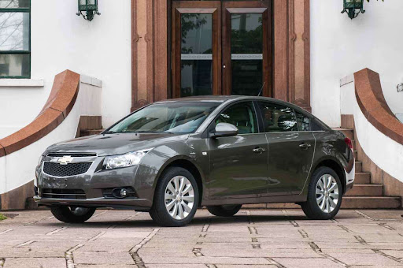

Cruze sedã 2014 R$57.000,00
Chevrolet Cruze 2014 LT sedã, equipado com motor 1.8 Ecotec Flex e câmbio automático. Um sedã médio que oferece conforto, estabilidade e ótimo desempenho para o dia a dia ou viagens.
O modelo conta com direção elétrica, ar-condicionado, airbags, freios ABS, controle de tração e central multimídia, proporcionando uma experiência de condução segura e confortável.
